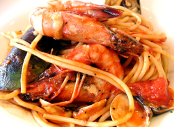

 |
스파게티 200g, 홍합 100g, 오징어 1/2마리, 새우3마리,
양파 1/2개, 샐러리 1대, 양송이 2개, 마늘1개, 토마토1
개, 버터 1 큰술, 밀가루 1 큰술, 오레가노 약간, 올리브유2
큰술, 치즈파우더 약간
|
-
면은 넉넉하게 끓인 물에 속음, 식용유를 넣고 8분
정도 삶마 제에 건져 물기를 뺸 후 올리브유에 버무려 놓는다
-
팬에 올리브유를 두르고 다진 양파와 마늘, 양송이,
셀러리를 볶다가 토마토를 잘게썰어 같이 볶아준다.
-
프라이팬에 버터를 녹여 뜨거워지면 밀가루 1큰술
을 넣고 타지않게 볶다가 스파게티 삶은 물 1컴을
붓고 끓인다.
-
2에 3을 붓고 끓이다가 소금, 후추로 간하고 홍합,
오징어, 새우를 넣고 살짝 끓인 후 파슬리 다진것,
오레가노 등을 넣는다
|